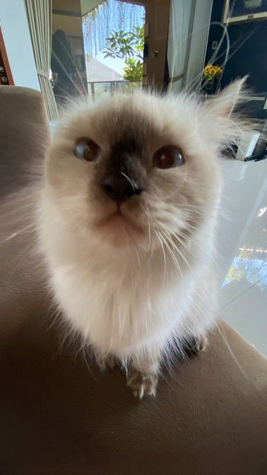

✦✦✧

Aku Selalu di gangguin majikanku
Hai aku CIMENG — kucingnya Cleinara Azalia Arfbellezhi tinggal di rumahnya zhi, yang ada di Berbah, aku selalu makan dan makan, dan kadang juga minum, kerjaanku selalu main dan kadang di ganggu zhi.
✦ Tentang aku